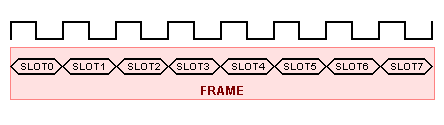

The purpose of the Data Acquisition sample design is to present benefits of SystemC Verification Library (SCV) in random stimulus generation for HDL model verification.
The design employs transaction level modeling methods combined with weighted randomization functions provided by the SCV library.
The C/C++ Configuration file included in the design (tester.dlm) is optimized for simulation speed and does not generate the debugging information.
In order to use the C Code Debug feature, the -O2 switch should be replaced with -ggdb in the Compilation options edit box of the C/C++ Configuration.
A processing unit is gathering and analyzing data produced by 8 sensors. The sensors transmit the data over a 16 bit wide bus (fig. 1).
Figure 1. Diagram of the data acquisition system
The transmission protocol uses frames that are made of 8 consecutive time slots - one for each sensor (fig. 2).

Figure 2. Frame structure
A slot boundary is designated by the rising edge of bus clock. During each slot exactly one of the sensors asserts 16 bit set of data that contains a 1 bit VALID flag, a 3 bit wide sensor ID and a 12 bit data sample (fig. 3).
Figure 3. Data transferred in a slot
Whenever a sensor has some data to transmit, it sets the VALID flag to '1' and puts the VALUE of the current sample to the bus. Each sensor is
independent from other sensors and may send data in its slot in any of the frames.
It is known that on the average 2 slots out of 8 are actually containing data that should be processed. Probability distribution of valid samples in a frame provided by measurements are given in Table 1.
TABLE 1. Probability distribution of the valid slots in a frame
| Valid slots | Probability |
| 0 | 0.044 |
| 1 | 0.127 |
| 2 | 0.706 |
| 3 | 0.069 |
| 4 | 0.033 |
| 5 | 0.011 |
| 6 | 0.005 |
| 7 | 0.003 |
| 8 | 0.003 |
Figure 4. Diagram of the probability distribution of the valid slots in a frame
The goal is to determine the depth of a first-in-first-out (FIFO) memory required on the input to the processing unit assuming that the data is read from the FIFO twice during an 8 slot frame.
The main criteria is the data loss ratio. A FIFO depth is considered to be satisfactory, if at most one sample out of 100 is lost for each of the sensors. A sample is lost whenever an attempt to write is made when the FIFO is full.
A fully synthesizable model of first-in-first-out memory is described in VHDL (fifo.vhd). Its depth is configurable and defined by the fifo_depth generic. The generic value can be defined during simulation initialization with the -G switch for the asim command.
A tester module is described using SystemC. The wrapper (tester.h, tester.cpp) provides an interface for connecting the instantiated test module (test.h and test.cpp) and the transactor (transactor.h and transactor.cpp) to the tested FIFO.
The transactor class, provides methods that translate function calls to certain activity of the signals. Instead of driving individual signals, the test focuses on the test plan and calls these functions to perform certain actions e.g. reset, transmit data etc.
The test module executes following scenario. First, the FIFO is properly initialized by calling initialize() method provided by the transactor. After that the actual verification process is started. For the specified number of iterations, a frame is constructed and sent to the FIFO via the bus. A number of sensors having valid data to transmit in a frame is chosen. For that purpose, an SCV smart pointer is used in conjunction with an SCV bag for shaping the probability distribution. Then, IDs of slots that will contain valid data and sample values are randomized. Once a frame is ready, the send_frame() transactor function is called. This function transmits the entire frame through the signal interface of the tester to the FIFO and records information on how many writes were performed and how many of them failed due to full memory. Finally, after sending the entire frame, the test calls the check_loss_ratio() function to verify whether the number of lost samples for each sensor does not exceed the requirement. If the loss ration is not satisfactory, the offending slots are enumerated and the test is terminated.
The test environment is assembled on a Block Diagram (test_environment.bde). It instantiates and connects the FIFO and the tester module. Additionally a configurable clock generator (clk_gen.vhd) and a divider (clk_div.vhd) are assembled on another diagram (clocks.bde). The clock frequency and division rate can be customized with the clk_period and clk_ratio generics, respectively. All these units are described in VHDL.
The sample design contains 3 DO macro files: